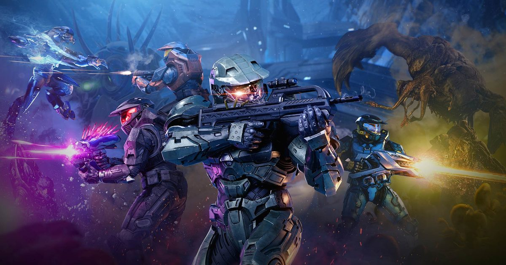

2026-11-16 · 单机深读

11 月 12 日，Xbox Wire 与 Halo Waypoint 同时挂出消息：《光环：战役进化》将在 今年冬季以免费更新形式加入四人合作 PvE「枪林弹雨」（Firefight）， 带新地图与扩充的武器库，Xbox FanFest 现场首玩， 12 月 12–13 日西雅图 Halo Fest 公布全部细节。中文圈基本把它当成「哦，加了个模式」处理。 但这件事有三层值得单独拆：这是一款零多人配置发售的重制版迎来的第一个多人内容； 关键美术里出现了洪魔——十七年 Firefight 史上第一次； 以及，这是 Halo 品牌在九月裁员之后交给 Activision 体系运作的第一份可评估的内容。
时间线先钉死。2026 年 7 月 28 日，《战役进化》以虚幻引擎 5 重制《光环：战斗进化》战役的形态发售， 附带三关新前传「Operation: Meteorite」（士官长与约翰逊中士）。它没有竞技多人， 连 Firefight 都没有。IGN 给了 7 分，评语是「大体上是一次精简的复述」。 所以从 7 月底到 11 月中，这款游戏的现实处境是：通关之后，没有理由再打开它。
11 月 12 日的官宣来自 Halo Studios 竞技参与总监 Tahir Hasangjekaj，措辞很谨慎： 「近二十年来，枪林弹雨一直是光环玩家的心头好……这一传统将在今年冬季延续， 我们以免费更新形式为《战役进化》加入四人合作 PvE 模式。」 关键词是 four-player cooperative PvE——通篇没有一次提到竞技、对战、PvP。 这不是疏忽，是范围声明。
平台侧没有悬念：PS5、Xbox Series X|S、PC（含 Game Pass），本体已支持四人跨平台联机与跨平台进度共享， 主机双人分屏合作。也就是说，Firefight 一上线就是跨平台可用的，不需要额外做联机层。
事实一：key art 里那几只不是星盟。官方放出的关键美术里，四名斯巴达战士面对的敌人 除了星盟，还有洪魔。这是 Firefight 自 2009 年《光环 3：ODST》登场以来， 十七年里第一次把洪魔放进波次名单。之前的历代 Firefight——Reach、Halo 5、 甚至《光环战争 2》的 RTS 版本——敌人清一色是星盟兵种（Grunt、Elite、Jackal、Hunter、Brute）。
事实二：武器表被动了。官方口径里除了「新地图」，还有「大量武器帮助小队拉平劣势」。 有媒体在实测口径中提到，重制版沙盒补进了系列其他作品的九把枪。对一个以「忠实重制」为卖点的作品， 这算一次明确的让步——初代《战斗进化》的沙盒本来只有十来把武器、四种载具， 要撑住十几波不重复，不动武器表根本做不到。
事实三：日期只说了「冬季」。英文里的 winter 是 12 月 1 日到次年 2 月 28 日。 但官方把「完整细节」留给了 12 月 12–13 日的 Halo Fest——而 11 月 15 日正好是 Xbox 与 Halo 共同的 25 岁生日（2001 年同日诞生）。这两件事叠在一起， 指向一个很具体的判断：公布即上线，或公布后一周内上线。我押 12 月中下旬。
（1）成本结构决定了答案。做竞技多人意味着重做网络代码、设计对称地图、 做匹配与反作弊、还要维持赛季内容——而《光环：无限》的免费多人仍在运营。 对一个全价重制版来说，做 PvP 等于自我蚕食。Firefight 则几乎全部复用战役资产： 地图是战役空间的改造，敌人是现成 AI，枪械是现成手感。 这是「最低成本换最高内容密度」的教科书操作，也是重制版最该做的第一件事。
（2）但它没有解决原始批评。「重制版没有多人」这句话里的「多人」， 玩家真正想要的是 PvP。Firefight 只是让已经买了的人有理由继续开机， 这两种价值不能混为一谈。官方至今没有公布任何竞技多人的计划——这个洞还在。
（3）洪魔进 Firefight，被严重低估了。这不是「多了几种敌人」， 是波次节奏的设计前提被换掉了。星盟的压迫感来自「兵种搭配 + 掩体对射」： 精英顶前排、豺狼举盾、猎人逼你换位，玩家靠走位与武器切换解题。 洪魔的 AI 逻辑完全不同——没有掩体概念、靠数量与不停歇的推进压迫、 感染形态会扑脸、Carrier Form 会炸。这两套节奏怎么拼进同一个波次表， 是一次真正的设计题，而不是皮肤工程。
更妙的是它顺手回答了一个二十五年的老争议。初代的洪魔关卡（尤其 Library） 是原作最著名的争议设计：单一走廊、无限刷怪、几乎没有节奏起伏。 如果 Firefight 用「可预期的波次 + 可选难度 + 四人分工」重写洪魔， 本质上是用新结构回答案旧批评——把当年那段「硬撑」变成「可玩的挑战」。 这是本次更新里最有野心的一步，也最可能翻车：洪魔缺乏星盟那种策略层次， 处理不好就会退化成纯粹的火力压制。
（4）Activision 变量怎么看。据报道，九月 Halo Studios 经历了一轮近乎清空的裁员， 品牌实际交由微软 / Xbox 体系下的 Activision 团队运作，仅留少量原班人马做顾问。 所以这份冬季更新是「后 Halo Studios 时代」第一份能拿来评估的内容。看两处就够了： 地图设计的语法——是否出现使命召唤式的三线加固定掩体点； 奖励结构的语法——是否引入外观解锁或赛季通行证式进度。 key art 里士官长的装甲明显更接近《光环 2》的造型而不是初代，如果那是可解锁外观， 说明外观经济已经进场。这两条都可以在 12 月的 Halo Fest 上一眼验证。
我们的观察：官方通稿的措辞比内容更值得读。「四人合作 PvE」被反复强调， 「竞技」一次都没出现；同时特意点出「经典设定而非现代变体」—— 这是在提前给老玩家吃定心丸，也是在为「为什么不做占点变体」预设答案。 一家刚换过手的团队，第一份内容选择「回归传统」，是风险最低的公关动作。
我们的观点：免费不等于低价值。对一款发售四个月、通关率已经见顶的重制版， Firefight 的真实作用是把「一次性消费」变成「周末习惯」。 这是服务型运营的入门动作，也是接手方最合理的第一步： 先用最低成本证明自己会运营，再谈重制续作（比如传闻中的《光环 2》重制）。 从这个角度看，这则更新的战略意义大于内容意义。
我们的案例对比：同样是「给老游戏补波次模式」，三条路线值得摆在一起看： 《战争机器》的 Horde 把建造与经济做进了波次，是「续作化」的样本； 《光环：无限》的 Firefight 做过占点变体（King of the Hill），是「现代化」的样本； 这次《战役进化》回归 ODST 式的经典设定，是「补课」的样本。 对老玩家，补课是对的；对拉新，补课远远不够——新玩家要的是进度感和可炫耀的成果， 而这恰恰是经典 Firefight 最不擅长的部分。
我们的实验：一个上线就能验证的推演。初代沙盒里能有效对付洪魔的手段极其有限—— 霰弹枪是主力，能量剑不存在，火焰喷射器只在 PC 版出现。 如果洪魔波次按原作 AI 密度投放，四人队在传奇难度下的崩盘点大概率 不会出现在血量最厚的精英波，而是出现在「感染形态 + Carrier Form」叠加的那一波： 前者逼你近身，后者逼你散开，两个要求互相矛盾。 上线后我们打算按波次记录崩盘位置，如果这个推演成立， 说明洪魔不是被「塞进」波次表，而是被重新设计过。
我们的评分理由：7.8 分评的是「方向正确 + 内容未知」的组合。 加分项：免费、跨平台、复用战役资产的高效率、洪魔进 Firefight 是真正的设计增量、 时间点踩在双 25 周年上；扣分项：没有具体日期、没有地图与波次细节、 竞技多人依旧缺席，且「换手后的第一份内容」本身带着不确定性。 一句话总结：这是重制版本该在七月就带着一起上线的东西， 迟到四个月，但迟到得对——它补上的是「和朋友在周五晚上开一局」的那张椅子， 而不是玩家真正在骂的那张。